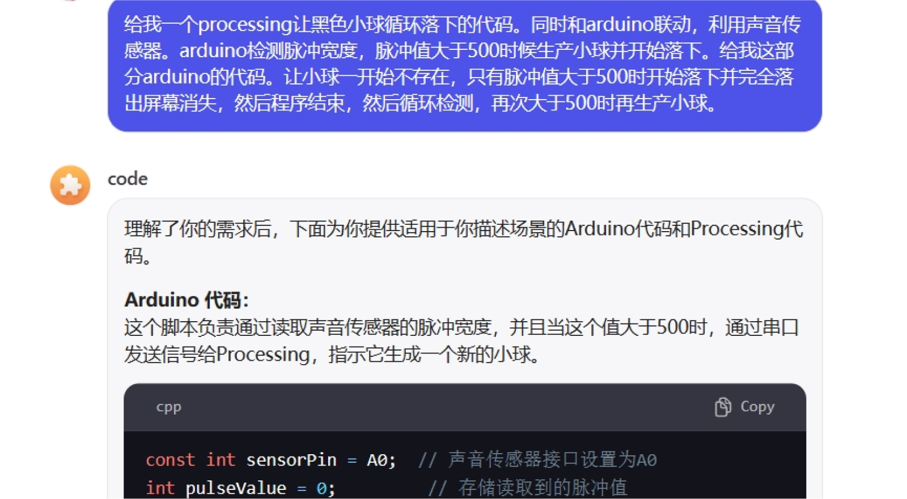
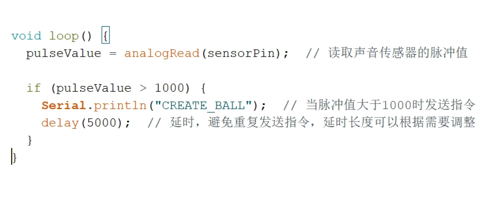

Arduino input
Analog circuit connection
We link the Arduino and Processing to implement an animation effect.
The pulse value is detected by an acoustic sensor, and when the pulse
value is greater than 1000, the ball is generated in the Processing screen
and falls.


First I tell the AI what I need to generate the code, but the first
Processing end of the code causes the blob to automatically re-run after
it has been generated once, and it can't be detected once and then
generated again.

The final problem was that the detection value of 500 was too low and
too sensitive, which was solved by turning it up to 1000.
Arduino Code:
copy
const int sensorPin = A0; //The sound sensor interface is set to A0.
int pulseValue = 0; // Store the pulse values read from the storage device.
void setup() {
Serial.begin(9600); // Initialize serial communication.
}
void loop() {
pulseValue = analogRead(sensorPin); // Read the pulse values from the sound sensor.
if (pulseValue > 1000) {
Serial.println("CREATE_BALL"); // Send the instruction when the pulse value is greater than 1000.
delay(5000); // Delay to avoid repeating instructions
}
}
Even the input port of the Arduino board's sound sensor is port A0,
and the variable pulseValue is created to store the value of the pulses
read.Assign the value of the detected pulse to the pulseValue variable, if
the pulse value is greater than 1000, send a signal to Processing, and set
a delay of 5000 milliseconds.
Arduino Code:
copy
import processing.serial.*;
Serial myPort; // Declare serial object
boolean ballExists = false; // A sign that controls the presence or absence of the ball
float ballY; // Ball Y coordinate
void setup() {
size(600, 600); // Set window size
ballY = 50; // Initially, the ball is at the top of the screen (visible range)
String portName = Serial.list()[0];
myPort = new Serial(this, portName, 9600);
}
void draw() {
background(255); // Set the background color to white
if (ballExists) {
ballY += 2; // Control the ball's falling speed
// When the ball leaves the screen completely, we keep it at the top to wait for the next signal
if (ballY > height + 25) {
ballExists = false; // Reset the presence state of the ball
ballY = 50; // The ball returns to the top of the screen
}
}
// Draw the ball only if it is present
if (ballExists) {
fill(0); // Set the fill color to black
noStroke();
ellipse(width / 2, ballY, 50, 50); // Draw ball
}
}
void serialEvent(Serial p) {
String msg = p.readStringUntil('\n');
if (msg != null) {
msg = msg.trim();
if (msg.equals("CREATE_BALL")) {
ballExists = true; // When the signal is received, change the state of the ball so that it begins to fall
}
}
}
On the Processing side, the variable ballExists is defined to detect the
existence of the ball and to facilitate the signal input to generate the
ball. In the first round of the program, set the display window size, then
set the height of the ball generation, and then declare the input port to
link with the Arduino.For the second round of the program, first define
the background color as white. The ball is then dropped through a loop
statement, and if the ball falls completely off the screen, the height of
the ball is reset to allow it to re-generate at the top again. At the same
time, the ball is only drawn when Processing receives a pulse value
greater than 1000.The third program, on the other hand, makes a
determination in Processing again, but it only generates the ball and lets
it fall when it receives a signal from the Arduino.